将特定的报文过滤条件设置为黑名单或白名单。NGFW会直接丢弃匹配黑名单过滤条件的报文，无需对匹配该过滤报文进行进一步检测。检测到源IP地址或目的地址处于白名单中的数据报文时，不经过安全引擎检测，直接放行。黑名单包括静态黑名单和动态黑名单，
静态黑名单/静态域名黑名单：静态五元组黑名单和静态域名黑名单均由管理员手工创建，如果管理员没有对已添加的黑名单执行删除操作，该黑名单一直生效。
动态五元组黑名单/动态域名黑名单：动态五元组黑名单可由NGFW根据策略自动生成也可由管理员手工添加；动态域名黑名单则只能由NGFW根据策略自动生成。动态黑名单较静态黑名单的一个区别是，动态黑名单具有生效时间，当剩余生效时间为0秒时，NGFW会自动删除动态黑名单。自动生成的动态黑名单来源有两种，1）当NGFW与第三方设备联动工作，第三方联动设备向NGFW通告异常事件时；2）NGFW应用层检测模块检测到的报文命中“加入黑名单”的策略时（如URL过滤、病毒过滤、防代理、EDR、防病毒网关、WAF、漏扫、DLP等），NGFW会自动生成动态黑名单。
具体配置如下：
白名单由管理员手工添加，添加步骤如下：
| 步骤1 | 选择 ，激活“白名单”页签。 |
| 步骤2 | 添加白名单。 |
Ø逐个添加
1）点击“
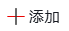
”，弹出“添加白名单”窗口，如下图所示。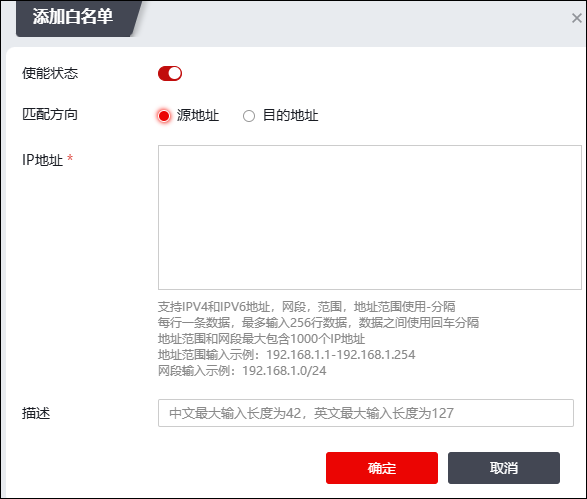
在设置白名单时，各项参数的具体说明如下表所示。
参数 |
说明 |
|---|---|
使能状态 |
选择是否启用该白名单。 |
匹配方向 |
选择检测白名单的方向，可选择源地址或目的地址。 |
IP地址 |
输入白名单IP地址。 支持IPV4和IPV6地址，网段，范围，地址范围使用-分隔； 每行一条数据，最多输入256行数据，数据之间使用回车分隔； 地址范围和网段最大包含1000个IP地址； 地址范围输入示例：192.168.1.1-192.168.1.254 网段输入示例：192.168.1.0/24 |
描述 |
添加描述信息。 |
2）配置完成后点击【确定】按钮。
Ø批量添加
点击白名单列表上方的“
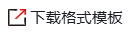
”下载格式模板（.xlsx格式）并填写，再点击“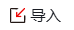
”，上传填写完成的白名单文件。Ø启用/禁静态白名单
勾选多条白名单，点击“启用/禁用”开关，可批量开启/关闭白名单。
ØHTTP代理IP检测
开启“HTTP代理IP检测”开关，则会同步开启白名单、静态黑名单、动态五元组黑名单的 “HTTP代理IP检测” 开关。
静态黑名单由管理员手工添加，添加步骤如下：
| 步骤1 | 选择 ，激活“静态黑名单”页签。 |
| 步骤2 | 添加静态黑名单。 |
Ø逐个添加
1）点击“ ”，弹出“添加静态黑名单”窗口，如下图所示。
”，弹出“添加静态黑名单”窗口，如下图所示。
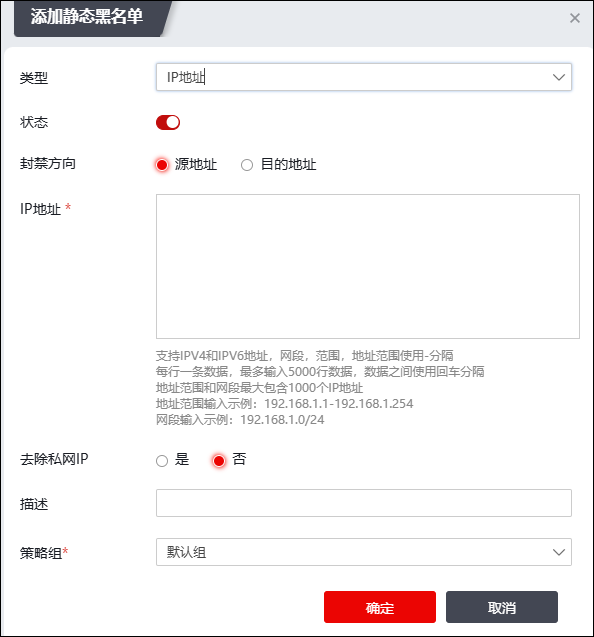
在设置静态黑名单时，各项参数的具体说明如下表所示。
参数 |
说明 |
|
|---|---|---|
类型 |
类型 |
选择添加静态黑名单的类型，可选择IP地址、五元组、MAC地址、应用组、角色。 |
IP地址 |
状态 |
选择是否启用该黑名单。 |
封禁方向 |
选择检测黑名单的方向，可选择源地址或目的地址。 |
|
IP地址 |
输入黑名单IP地址。 支持IPV4和IPV6地址，网段，范围，地址范围使用-分隔； 每行一条数据，最多输入5000行数据，数据之间使用回车分隔； 地址范围和网段最大包含1000个IP地址； 地址范围输入示例：192.168.1.1-192.168.1.254 网段输入示例：192.168.1.0/24 |
|
去除私网IP |
选择是否去除私网IP地址。 |
|
五元组 |
源地址 |
设置黑名单的源IP地址，支持IPv4和IPv6地址。 |
源端口 |
设置黑名单的源端口号，数值类型，取值范围为：1-65535。 |
|
目的地址 |
设置黑名单的目的IP地址，支持IPv4和IPv6地址。 |
|
目的端口 |
设置黑名单的目的端口，数值类型，取值范围为：1-65535。 |
|
协议 |
设置黑名单的协议号，数值类型，取值范围为：1-255。 |
|
MAC地址 |
源MAC |
设置黑名单的源MAC地址。 |
应用组 |
应用组 |
设置匹配该黑名单的应用程序。关于应用的介绍和设置具体请参见 应用 说明： 如果应用程序具有多项功能，则可以选择整个应用程序或个别功能。如果选择整个应用程序，则所有功能均将包含，而且在将来添加功能时会自动更新应用程序定义。 |
角色 |
角色 |
选择黑名单限制的角色。相关参数的设置具体请参见 角色控制。 |
描述 |
添加黑名单描述信息。 |
|
策略组 |
选择策略组，可选择默认策略组，也可选择自定义策略组。 |
|
2）配置完成后点击【确定】按钮。
Ø批量添加
点击黑名单列表上方的“
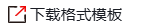
”下载格式模板（.xlsx格式）并填写，再点击“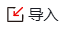
”，上传填写完成的黑名单文件。上传完成后，如果导入失败，则会生成对应的失败日志，下载失败日志可查看添加失败IP和失败原因。Ø添加策略组
点击“
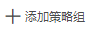
”弹窗如下图所示。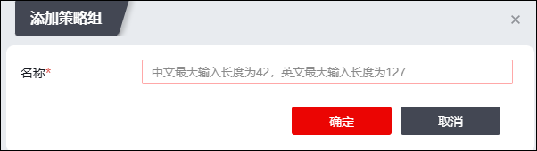
输入策略组名称，点击【确定】按钮，完成策略组的添加。
Ø设置HTTP代理IP检测开关
点击白名单/静态黑名单/动态五元组黑名单下方的“”按钮，弹出“提示”窗口，点击【确定】，可开启HTTP代理IP检测开关，如下图所示。
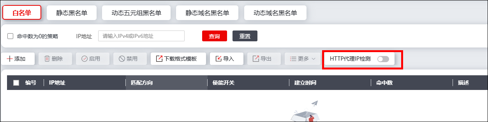
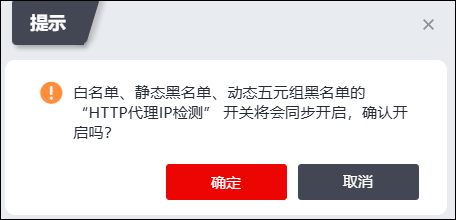
Ø启用/禁用静态黑名单
勾选多条黑名单，点击“启用/禁用”开关，可批量开启/关闭黑名单。
动态五元组黑名单除了由系统根据策略匹配流量自动生成外，支持管理员手工添加。手工添加步骤如下：
| 步骤1 | 选择 ，激活“动态五元组黑名单”页签。 |
| 步骤2 | 添加动态黑名单。 |
Ø手工批量添加
1）点击“”，弹出如下图所示窗口。
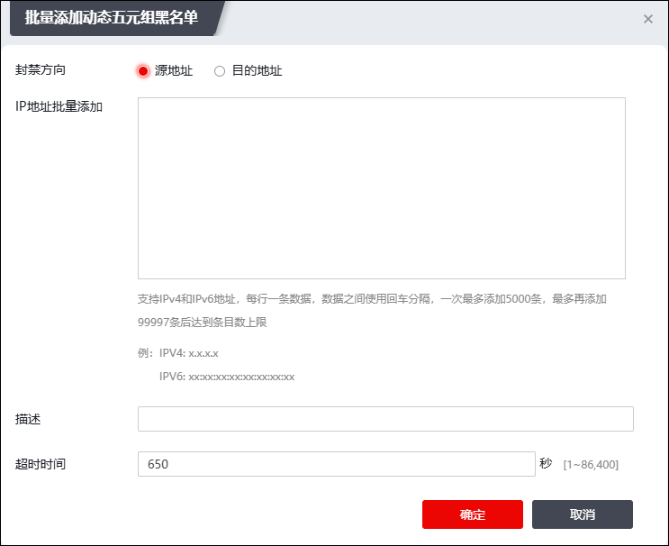
在设置动态黑名单时，各项参数的具体说明如下表所示。
参数 |
说明 |
|---|---|
类型 |
设置动态黑名单类型，可选项：源IP、目的IP。 |
源IP批量添加 |
支持IPv4和IPv6地址，每行一条数据，数据之间使用回车分隔。 |
描述 |
输入其他描述信息。 |
超时时间 |
设置手工添加的动态黑名单的有效时间。动态黑名单添加后，如果黑名单有效的剩余时间到0秒时，系统自动删除该动态黑名单。 |
2）配置完成后点击【确定】按钮。
Ø手工批量导入
点击黑名单列表上方的“”下载格式模板（.xlsx格式）并填写，再点击“”，上传填写完成的黑名单文件。上传完成后，如果导入失败，则会生成对应的失败日志，下载失败日志可查看添加失败IP和失败原因。
静态域名黑名单由管理员手工添加，添加步骤如下：
| 步骤1 | 选择 ，激活“静态域名黑名单”页签。 |
| 步骤2 | 添加静态域名黑名单。 |
Ø逐个添加
1）点击“”，弹出如下图所示窗口。
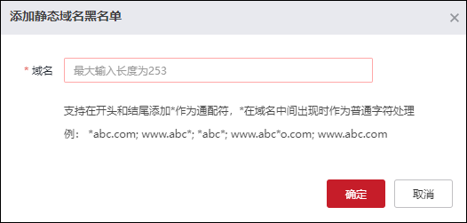
2）按照窗口提示配置域名黑名单，点击【确定】按钮完成配置。
Ø批量添加
1）点击“批量添加”，弹出如下图所示窗口。
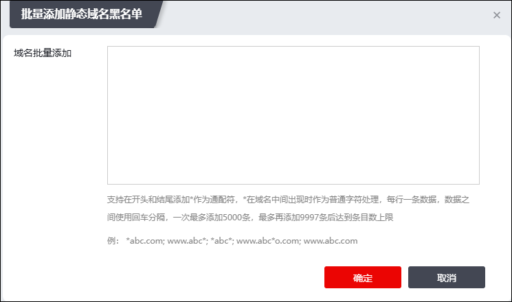
2）按照窗口提示配置域名黑名单，最后点击【确定】完成配置。
动态域名黑名单只支持系统根据策略匹配流量自动生成，管理自动生成的域名黑名单步骤如下：
| 步骤1 | 选择 ，激活“动态域名黑名单”页签，可查看动态域名黑名单信息。 |
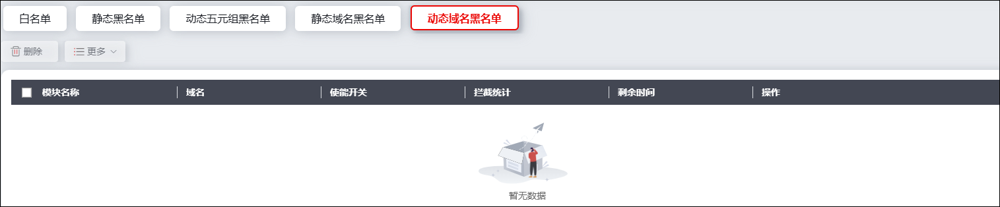
| 步骤2 | 勾选黑名单列表，点击“删除”可以删除动态黑名单。手工删除动态黑名单可立即使该动态黑名单失效，而无需待黑名单有效时间剩余为0秒时失效。 |